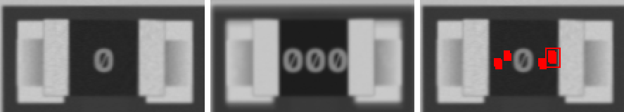
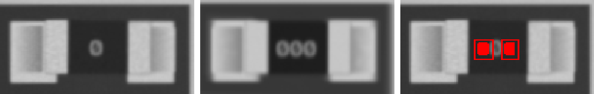
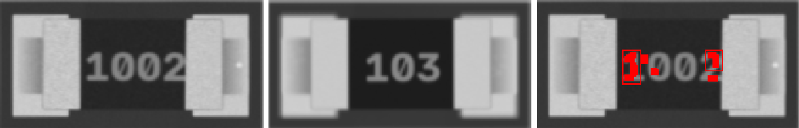
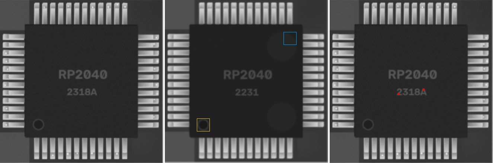

1u · 1206
ANOMALY

ncc 0.89 · ncc_thr 0.6 · mad 4.3 · mad_thr 8.0 · dx_mm 0.023 · dy_mm 0.07 · dtheta_deg -0.0 · anomaly_px 82
0R · 0805
ANOMALY

ncc 0.959 · ncc_thr 0.6 · mad 5.2 · mad_thr 9.8 · dx_mm -0.023 · dy_mm 0.0 · dtheta_deg -0.0 · anomaly_px 58
0R · 0603
ANOMALY

ncc 0.975 · ncc_thr 0.6 · mad 5.1 · mad_thr 9.9 · dx_mm 0.023 · dy_mm -0.023 · dtheta_deg -0.0 · anomaly_px 129
10k · 1206
ANOMALY

ncc 0.95 · ncc_thr 0.6 · mad 4.8 · mad_thr 9.1 · dx_mm 0.0 · dy_mm 0.023 · dtheta_deg -0.0 · anomaly_px 229
RP2040 · LQFP-48
ANOMALY

ncc 0.907 · ncc_thr 0.6 · mad 1.0 · mad_thr 7.1 · mark_ncc {'0': 0.973, '90': 0.136, '180': 0.187, '270': 0.186} · dx_mm 0.023 · dy_mm -0.047 · dtheta_deg -0.0 · anomaly_px 0
47u · CP_Elec_5x5.8
ncc 0.992 · ncc_thr 0.6 · mad 3.4 · mad_thr 13.3 · mark_ncc {'0': 0.992, '180': -0.164} · dx_mm -0.023 · dy_mm 0.0 · dtheta_deg -0.0 · anomaly_px 0
10n · 0805
ncc 0.958 · ncc_thr 0.6 · mad 5.4 · mad_thr 8.8 · dx_mm 0.0 · dy_mm 0.0 · dtheta_deg -0.0 · anomaly_px 0
10n · 0603
ncc 0.875 · ncc_thr 0.6 · mad 6.8 · mad_thr 9.4 · dx_mm -0.047 · dy_mm -0.047 · dtheta_deg 2.0 · anomaly_px 0
10u · 0805
ncc 0.96 · ncc_thr 0.6 · mad 4.7 · mad_thr 8.1 · dx_mm -0.023 · dy_mm 0.047 · dtheta_deg -0.0 · anomaly_px 0
10n · 0805
ncc 0.966 · ncc_thr 0.6 · mad 4.9 · mad_thr 8.5 · dx_mm 0.0 · dy_mm -0.047 · dtheta_deg -0.0 · anomaly_px 0
22p · 0603
ncc 0.93 · ncc_thr 0.6 · mad 7.1 · mad_thr 9.7 · dx_mm -0.023 · dy_mm 0.0 · dtheta_deg -0.0 · anomaly_px 0
220u · CP_Elec_6.3x7.7
ncc 0.995 · ncc_thr 0.6 · mad 2.3 · mad_thr 11.8 · mark_ncc {'0': 0.965, '180': -0.33} · dx_mm 0.0 · dy_mm 0.0 · dtheta_deg -0.0 · anomaly_px 0
10u · 0603
ncc 0.949 · ncc_thr 0.6 · mad 7.2 · mad_thr 9.5 · dx_mm 0.0 · dy_mm -0.023 · dtheta_deg -0.0 · anomaly_px 0
10n · 0603
ncc 0.96 · ncc_thr 0.6 · mad 6.6 · mad_thr 10.1 · dx_mm 0.023 · dy_mm 0.0 · dtheta_deg -0.0 · anomaly_px 0
22p · 1206
ncc 0.965 · ncc_thr 0.6 · mad 4.0 · mad_thr 8.0 · dx_mm 0.023 · dy_mm 0.0 · dtheta_deg -0.0 · anomaly_px 0
Tantalum_Case-A · Tantalum_Case-A
ncc 0.939 · ncc_thr 0.6 · mad 4.1 · mad_thr 8.0 · mark_ncc {'0': 0.994, '180': 0.537} · dx_mm 0.0 · dy_mm 0.07 · dtheta_deg -0.0 · anomaly_px 0
4u7 · 0805
ncc 0.942 · ncc_thr 0.6 · mad 4.7 · mad_thr 8.2 · dx_mm 0.047 · dy_mm 0.047 · dtheta_deg -0.0 · anomaly_px 0
4u7 · 0603
ncc 0.926 · ncc_thr 0.6 · mad 6.0 · mad_thr 9.3 · dx_mm -0.023 · dy_mm -0.047 · dtheta_deg -0.0 · anomaly_px 0
4u7 · 0805
ncc 0.969 · ncc_thr 0.6 · mad 4.9 · mad_thr 8.3 · dx_mm 0.0 · dy_mm 0.023 · dtheta_deg -0.0 · anomaly_px 0
22p · 0603
ncc 0.964 · ncc_thr 0.6 · mad 6.9 · mad_thr 9.5 · dx_mm 0.023 · dy_mm 0.0 · dtheta_deg -0.0 · anomaly_px 0
Tantalum_Case-A · Tantalum_Case-A
ncc 0.981 · ncc_thr 0.6 · mad 4.3 · mad_thr 20.4 · mark_ncc {'0': 0.999, '180': 0.845} · dx_mm -0.047 · dy_mm 0.0 · dtheta_deg -0.0 · anomaly_px 0
100n · 0402
ncc 0.95 · ncc_thr 0.6 · mad 6.3 · mad_thr 12.8 · dx_mm 0.0 · dy_mm 0.0 · dtheta_deg -0.0 · anomaly_px 0
22p · 0402
ncc 0.948 · ncc_thr 0.6 · mad 5.3 · mad_thr 9.8 · dx_mm 0.0 · dy_mm 0.023 · dtheta_deg -0.0 · anomaly_px 0
100u · CP_Elec_5x5.8
ncc 0.993 · ncc_thr 0.6 · mad 4.9 · mad_thr 12.1 · mark_ncc {'0': 0.987, '180': 0.007} · dx_mm 0.0 · dy_mm -0.023 · dtheta_deg -0.0 · anomaly_px 0
10n · 0402
ncc 0.954 · ncc_thr 0.6 · mad 7.9 · mad_thr 13.7 · dx_mm -0.023 · dy_mm 0.0 · dtheta_deg -0.0 · anomaly_px 0
4u7 · 0805
ncc 0.97 · ncc_thr 0.6 · mad 4.6 · mad_thr 8.2 · dx_mm 0.0 · dy_mm -0.023 · dtheta_deg -0.0 · anomaly_px 0
10u · 0603
ncc 0.949 · ncc_thr 0.6 · mad 6.9 · mad_thr 9.6 · dx_mm 0.047 · dy_mm 0.023 · dtheta_deg -0.0 · anomaly_px 0
1u · 1206
ncc 0.964 · ncc_thr 0.6 · mad 4.2 · mad_thr 7.9 · dx_mm -0.023 · dy_mm 0.0 · dtheta_deg -0.0 · anomaly_px 0
10u · 0805
ncc 0.965 · ncc_thr 0.6 · mad 4.6 · mad_thr 8.2 · dx_mm 0.023 · dy_mm 0.0 · dtheta_deg -0.0 · anomaly_px 0
SOD-123 · SOD-123
ncc 0.995 · ncc_thr 0.6 · mad 0.8 · mad_thr 6.9 · mark_ncc {'0': 0.987, '180': 0.815} · dx_mm -0.023 · dy_mm -0.023 · dtheta_deg -0.0 · anomaly_px 0
LED_0805 · LED_0805
ncc 0.97 · ncc_thr 0.6 · ncc_180 0.762 · mad 6.6 · mad_thr 9.1 · mark_ncc {'0': 0.0, '180': 0.0} · dx_mm -0.023 · dy_mm 0.023 · dtheta_deg -0.0 · anomaly_px 0
SOD-123 · SOD-123
ncc 0.992 · ncc_thr 0.6 · mad 1.3 · mad_thr 7.3 · mark_ncc {'0': 0.817, '180': 0.175} · dx_mm -0.047 · dy_mm 0.023 · dtheta_deg -0.0 · anomaly_px 0
LED_0805 · LED_0805
ncc 0.986 · ncc_thr 0.6 · ncc_180 0.783 · mad 6.8 · mad_thr 8.8 · mark_ncc {'0': 0.0, '180': 0.0} · dx_mm -0.023 · dy_mm 0.023 · dtheta_deg -0.0 · anomaly_px 0
LED_0805 · LED_0805
ncc 0.981 · ncc_thr 0.6 · ncc_180 0.88 · mad 6.4 · mad_thr 9.8 · mark_ncc {'0': 0.0, '180': 0.0} · dx_mm -0.023 · dy_mm 0.023 · dtheta_deg -2.0 · anomaly_px 0
LED_0805 · LED_0805
ncc 0.987 · ncc_thr 0.6 · ncc_180 0.934 · mad 5.7 · mad_thr 11.9 · mark_ncc {'0': 0.0, '180': 0.0} · dx_mm -0.047 · dy_mm 0.0 · dtheta_deg -0.0 · anomaly_px 0
SOD-123 · SOD-123
ncc 0.996 · ncc_thr 0.6 · mad 1.5 · mad_thr 7.3 · mark_ncc {'0': 0.923, '180': 0.636} · dx_mm 0.0 · dy_mm 0.0 · dtheta_deg -0.0 · anomaly_px 0
4u7 · L_4x4
ncc 0.97 · ncc_thr 0.6 · mad 1.2 · mad_thr 7.6 · dx_mm 0.0 · dy_mm 0.0 · dtheta_deg -0.0 · anomaly_px 0
J3Y · SOT-23
ncc 0.985 · ncc_thr 0.6 · ncc_180 0.269 · mad 1.0 · mad_thr 7.1 · mad_180 2.9 · dx_mm 0.0 · dy_mm -0.023 · dtheta_deg -0.0 · anomaly_px 0
A7 · SOT-23
ncc 0.975 · ncc_thr 0.6 · ncc_180 0.347 · mad 1.0 · mad_thr 7.1 · mad_180 5.2 · dx_mm 0.023 · dy_mm -0.047 · dtheta_deg 2.0 · anomaly_px 0
S4 · SOT-23
ncc 0.982 · ncc_thr 0.6 · ncc_180 0.299 · mad 1.0 · mad_thr 7.0 · mad_180 14.3 · dx_mm 0.0 · dy_mm 0.0 · dtheta_deg -0.0 · anomaly_px 0
0R · 0402
ncc 0.979 · ncc_thr 0.6 · mad 8.7 · mad_thr 14.3 · dx_mm 0.047 · dy_mm -0.023 · dtheta_deg -0.0 · anomaly_px 0
100k · 0805
ncc 0.949 · ncc_thr 0.6 · mad 6.5 · mad_thr 9.6 · dx_mm 0.023 · dy_mm 0.0 · dtheta_deg -0.0 · anomaly_px 0
10k · 0603
ncc 0.97 · ncc_thr 0.6 · mad 6.1 · mad_thr 9.6 · dx_mm 0.047 · dy_mm 0.023 · dtheta_deg -0.0 · anomaly_px 0
10k · 0805
ncc 0.953 · ncc_thr 0.6 · mad 6.4 · mad_thr 9.1 · dx_mm 0.047 · dy_mm 0.023 · dtheta_deg -0.0 · anomaly_px 0
100k · 0603
ncc 0.971 · ncc_thr 0.6 · mad 6.2 · mad_thr 9.8 · dx_mm 0.0 · dy_mm 0.0 · dtheta_deg -0.0 · anomaly_px 0
220 · 0402
ncc 0.986 · ncc_thr 0.6 · mad 6.3 · mad_thr 14.4 · dx_mm -0.023 · dy_mm 0.0 · dtheta_deg -0.0 · anomaly_px 0
100k · 0402
ncc 0.987 · ncc_thr 0.6 · mad 8.5 · mad_thr 17.7 · dx_mm 0.0 · dy_mm -0.023 · dtheta_deg -0.0 · anomaly_px 0
100k · 0805
ncc 0.955 · ncc_thr 0.6 · mad 4.9 · mad_thr 9.5 · dx_mm 0.023 · dy_mm 0.0 · dtheta_deg -0.0 · anomaly_px 0
220 · 0805
ncc 0.942 · ncc_thr 0.6 · mad 7.4 · mad_thr 9.8 · dx_mm 0.023 · dy_mm 0.023 · dtheta_deg -0.0 · anomaly_px 0
0R · 0402
ncc 0.985 · ncc_thr 0.6 · mad 6.9 · mad_thr 13.6 · dx_mm 0.047 · dy_mm 0.0 · dtheta_deg -0.0 · anomaly_px 0
10k · 0402
ncc 0.992 · ncc_thr 0.6 · mad 6.5 · mad_thr 15.6 · dx_mm -0.023 · dy_mm 0.023 · dtheta_deg -0.0 · anomaly_px 0
100k · 0402
ncc 0.974 · ncc_thr 0.6 · mad 9.7 · mad_thr 18.4 · dx_mm 0.047 · dy_mm -0.023 · dtheta_deg -0.0 · anomaly_px 0
10k · 0603
ncc 0.97 · ncc_thr 0.6 · mad 6.4 · mad_thr 10.9 · dx_mm -0.047 · dy_mm 0.0 · dtheta_deg -0.0 · anomaly_px 0
1k · 0402
ncc 0.995 · ncc_thr 0.6 · mad 5.6 · mad_thr 16.8 · dx_mm 0.0 · dy_mm 0.0 · dtheta_deg -0.0 · anomaly_px 0
10k · 0805
ncc 0.948 · ncc_thr 0.6 · mad 7.3 · mad_thr 9.7 · dx_mm 0.023 · dy_mm -0.023 · dtheta_deg -0.0 · anomaly_px 0
CH340 · QFN-32
ncc 0.951 · ncc_thr 0.6 · mad 1.1 · mad_thr 7.1 · mark_ncc {'0': 0.983, '90': 0.19, '180': 0.306, '270': 0.476} · dx_mm -0.023 · dy_mm 0.0 · dtheta_deg -0.0 · anomaly_px 0
NE555 · SOIC-8
ncc 0.924 · ncc_thr 0.6 · mad 1.5 · mad_thr 7.4 · mark_ncc {'0': 0.957, '180': 0.149} · dx_mm 0.023 · dy_mm 0.023 · dtheta_deg -0.0 · anomaly_px 0
74LVC245 · TSSOP-20
ncc 0.94 · ncc_thr 0.6 · mad 1.3 · mad_thr 7.4 · mark_ncc {'0': 0.958, '180': 0.182} · dx_mm 0.0 · dy_mm -0.047 · dtheta_deg -0.0 · anomaly_px 0
CH340 · QFN-32
ncc 0.966 · ncc_thr 0.6 · mad 1.6 · mad_thr 7.8 · mark_ncc {'0': 0.99, '90': 0.417, '180': 0.235, '270': 0.34} · dx_mm 0.0 · dy_mm 0.0 · dtheta_deg -0.0 · anomaly_px 0
Crystal_SMD_3225 · Crystal_SMD_3225
ncc 0.997 · ncc_thr 0.6 · mad 3.2 · mad_thr 13.6 · dx_mm 0.0 · dy_mm 0.023 · dtheta_deg -0.0 · anomaly_px 0
Crystal_SMD_3225 · Crystal_SMD_3225
ncc 0.991 · ncc_thr 0.6 · mad 3.4 · mad_thr 15.5 · dx_mm 0.0 · dy_mm 0.023 · dtheta_deg -0.0 · anomaly_px 0